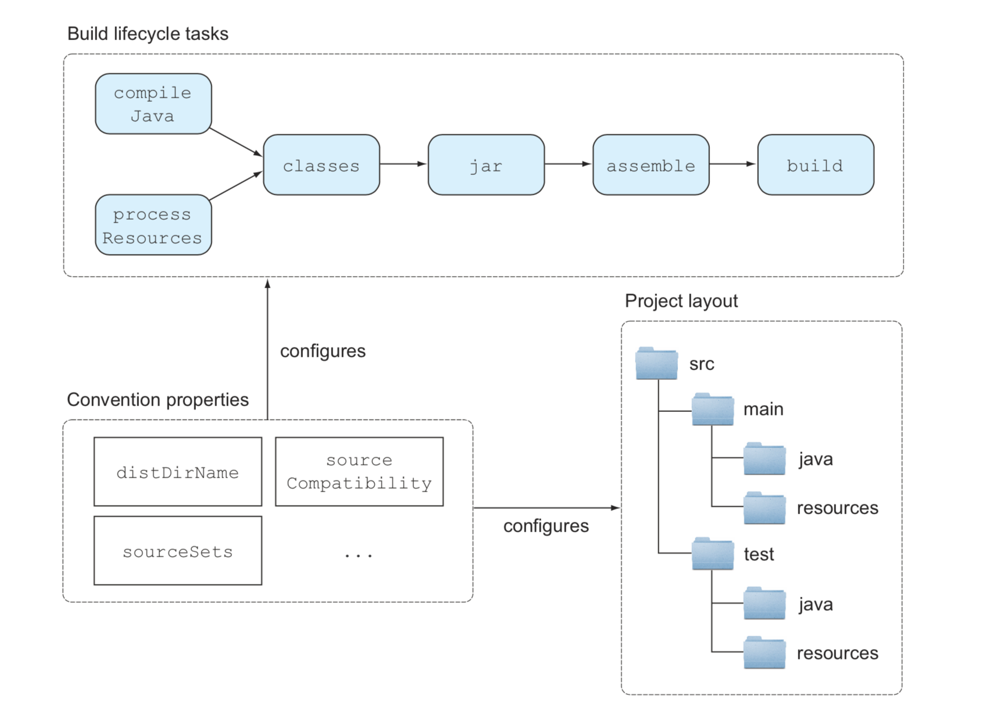
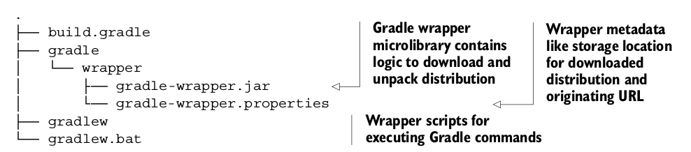

Gradle的构建生命周期

Gradle 项目可以使用 Maven Plugin 将构建上传到 Maven 仓库中：
1 | apply plugin: 'maven' |
想在 build 时发布版本导 Maven 仓库中，只需要添加一行任务依赖配置即可：
1 | build.dependsOn 'uploadArchives' |
通过 gradle -q tasks 显示所有的任务
任务名称缩写
Gradle提高效率的一个办法就是能够在命令行输入任务名的驼峰简写，当你的任务名称非常长的时候这很有用
命令行选项
- -i:Gradle默认不会输出很多信息，你可以使用-i选项改变日志级别为INFO
- -s:如果运行时错误发生打印堆栈信息
- -q:只打印错误信息
- -?-h,–help:打印所有的命令行选项
- -b,–build-file:Gradle默认执行build.gradle脚本，如果想执行其他脚本可以使用这个命令，比如gradle -b test.gradle
- –offline:在离线模式运行build,Gradle只检查本地缓存中的依赖
- -D, –system-prop:Gradle作为JVM进程运行，你可以提供一个系统属性比如：-Dmyprop=myValue
- -P,–project-prop:项目属性可以作为你构建脚本的一个变量，你可以传递一个属性值给build脚本，比如：-Pmyprop=myValue
- tasks:显示项目中所有可运行的任务
- properties:打印你项目中所有的属性值
指定 Main-Class
1 | jar { |
gradle wrapper 的目录结构

所以，gradle目录、gradlew 和 gradlew.bat 都应该放在版本控制内。
包装器可以根据需求自定义，如访问外网受限时：
1 | task wrapper(type: Wrapper) { |
更多包装器的特性查看：http://gradle.org/docs/current/dsl/org.gradle.api.tasks.wrapper.Wrapper.html
Gradle允许通过外部属性来定义自己的变量
外部属性一般存储在键值对中，要添加一个属性，需要使用ext命名空间：
1 | //Only initial declaration of extra property requires you to use ext namespace |
外部属性可以定义在一个属性文件中： 通过在 /.gradle路径 或者项目根目录下的 gradle.properties 文件来定义属性，可以直接注入到项目中：
假设在 gradle.properties 文件中定义了下面的属性：
1 | exampleProp = myValue |
可以在项目中访问这两个变量：
1 | assert project.exampleProp == 'myValue' |
定义属性的其他方法
- 通过
-P命令行选项来定义项目属性 - 通过
-D命令行选项来定义系统属性 - 环境属性遵循这个模式：
ORG_GRADLE_PROJECT_propertyName=someValue
当任务创建的时候你可以添加任意多个动作，每一个任务都有一个动作清单，他们在运行的时候是执行的
1 | task printVersion { |
输出
1 | > Task :printVersion |
当你想添加动作的那个任务不是你自己写的时候这会非常有用，你可以添加一些自定义的逻辑，比如你可以添加
doFirst动作到compile-Java任务来检查项目是否包含至少一个source文件。
dependsOn方法用来声明一个任务依赖于一个或者多个任务
1 | task first << { println "first" } |
输出
1 | first |
Gradle 并不保证依赖的任务能够按顺序执行，
dependsOn方法只是定义这些任务应该在这个任务之前执行，但是这些依赖的任务具体怎么执行它并不关心（也就是和[second, first]顺序 无关），因为任务不是顺序执行的，就可以并发的执行来提高性能。
可以使用 finalizedBy 使一个任务结束后自动触发另一个
1 | task first << { println "first" } |
first 结束后自动触发任务 second：
1 |
|
allprojects 和 subprojects
你可以用 allprojects 方法给所有的项目添加 group 和 version 属性，由于根项目不需要 Java 插件，你可以使用 subprojects 给所有子项目添加Java插件:
1 | allprojects { |